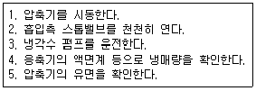
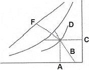
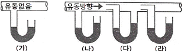

공조냉동기계기능사 (2015-04-04 기출문제)
1과목: 공조냉동안전관리
1. 전기스위치의 조작 시 오른손으로 하기를 권장하는 이유로 가장 적당한 것은?
- 심장에 전류가 직접 흐르지 않도록 하기 위하여
- 작업을 손쉽게 하기 위하여
- 스위치 개폐를 신속히 하기 위하여
- 스위치 조작 시 많은 힘이 필요하므로
(정답률: 92%)

2. 작업복 선정 시 유의사항으로 틀린 것은?
- 작업복의 스타일은 착용자의 연령, 성별 등은 고려할 필요가 없다.
- 화기사용 작업자는 방염성, 불연성의 작업복을 착용한다.
- 작업복은 항상 깨끗이 하여야 한다.
- 작업복은 몸에 맞고 동작이 편하며, 상의 끝이나 바지자락 등이 기계에 말려 들어갈 위험이 없도록 한다.
(정답률: 90%)
3. 다음 중 저속 왕복동 냉동장치의 운전 순서로 옳은 것은?

- 1-2-3-4-5
- 5-4-3-2-1
- 5-4-3-1-2
- 1-2-5-3-4
(정답률: 69%)
4. 소화기 보관상의 주의사항으로 틀린 것은?
- 겨울철에는 얼지 않도록 보온에 유의 한다.
- 소화기 뚜껑은 조금 열어놓고 봉인하지 않고 보관한다.
- 습기가 적고 서늘한 곳에 둔다.
- 가스를 채워 넣는 소화기는 가스를 채울 때 반드시 제조업자에게 의뢰 하도록 한다.
(정답률: 92%)
5. 왕복펌프의 보수 관리 시 점검 사항으로 틀린 것은?
- 윤활유 작동 확인
- 축수 온도 확인
- 스터핑 박스의 누설 확인
- 다단 펌프에 있어서 프라이밍 누설 확인
(정답률: 63%)
6. 가스접합용접장치의 배관을 하는 경우 주관, 분기관에 안전기를 설치하는데, 이는 하나의 취관에 몇 개 이상의 안전기를 설치해야 하는가?
- 1
- 2
- 3
- 4
(정답률: 71%)
7. 안전보건관리책임자의 직무에 가장 거리가 먼 것은?
- 산업재해의 원인 조사 및 재발 방지대책 수립에 관한 사항
- 안전에 관한 조직편성 및 예산책정에 관한 사항
- 안전 보건과 관련된 안전장치 및 보호구 구입 시의 적격품 여부 확인에 관한 사항
- 근로자의 안전 보건교육에 관한 사항
(정답률: 75%)
8. 전기 용접 시 전격을 방지하는 방법으로 틀린 것은?
- 용접기의 절연 및 접지상태를 확실히 점검 할 것
- 가급적 개로 전압이 높은 교류용접기를 사용할 것
- 장시간 작업 중지 때는 반드시 스위치를 차단시킬 것
- 반드시 주어진 보호구와 복장을 착용할 것
(정답률: 91%)
9. 다음 중 점화원으로 볼 수 없는 것은?
- 전기 불꽃
- 기화열
- 정전기
- 못을 박을 때 튀는 불꽃
(정답률: 79%)
10. 스패너 사용 시 주의 사항으로 틀린 것은?
- 스패너가 벗겨지거나 미끄러짐에 주의한다.
- 스패너의 입이 너트 폭과 잘 맞는 것을 사용한다.
- 스패너 길이가 짧은 경우에는 파이프를 끼어서 사용한다.
- 무리하게 힘을 주지 말고 조심스럽게 사용한다.
(정답률: 93%)
11. 보일러의 과열 원인으로 적절하지 못한 것은?
- 보일러 수의 수위가 높을 때
- 보일러 내 스케일이 생성되었을 때
- 보일러수의 순환이 불량할 때
- 전열면에 국부적인 열을 받았을 때
(정답률: 78%)
12. 다음 중 위생 보호구에 해당되는 것은?
- 안전모
- 귀마개
- 안전화
- 안전대
(정답률: 85%)
13. 근로자가 안전하게 통행할 수 있도록 통로에는 몇 럭스 이상의 조명시설을 해야 하는가?
- 10
- 30
- 45
- 75
(정답률: 76%)
14. 교류 아크 용접기 사용 시 안전 유의사항으로 틀린 것은?
- 용접변압기의 1차측 전로는 하나의 용접기에 대해서 2개의 개폐기로 할 것
- 2차측 전로는 용접봉 케이블 또는 캡타이어 케이블을 사용할 것
- 용접기의 외함은 접지하고 누전차단기를 설치할 것
- 일정 조건하에서 용접기를 사용할 때는 자동전격방지 장치를 사용할 것
(정답률: 72%)
15. 전동공구 사용상의 안전수칙이 아닌 것은?
- 전기드릴로 아주 작은 물건이나 긴 물건에 작업할 때에는 지그를 사용한다.
- 전기 그라인더나 샌더가 회전하고 있을 때 작업대 위에 공구를 놓아서는 안 된다.
- 수직 휴대용 연삭기의 숫돌의 노출각도는 90°까지 허용된다.
- 이동식 전기드릴 작업 시는 장갑을 끼지 말아야 한다.
(정답률: 77%)
2과목: 냉동기계
16. 글랜드 패킹의 종류가 아닌 것은?
- 오일시일 패킹
- 석면 야안 패킹
- 아마존 패킹
- 몰드 패킹
(정답률: 58%)
17. 냉동사이클에서 증발온도가 -15℃이고 과열도가 5℃일 경우 압축기 흡입가스온도는?
- 5℃
- -10℃
- -15℃
- -20℃
(정답률: 75%)
18. 열에 관한 설명으로 틀린 것은?
- 승화열은 고체가 기체로 되면서 주위에서 빼앗는 열량이다.
- 잠열은 물체의 상태를 바꾸는 작용을 하는 열이다.
- 현열은 상태 변화 없이 온도 변화에 필요한 열이다.
- 융해열은 현열의 일종이며, 고체를 액체로 바꾸는데 필요한 열이다.
(정답률: 73%)
19. 2000W의 전기가 1시간 일한 양을 열량으로 표현하면 얼마인가?
- 172kcal/h
- 860kcal/h
- 17200kcal/h
- 1720kcal/h
(정답률: 61%)
20. 왕복동식 압축기와 비교하여 스크류 압축기의 특징이 아닌 것은?
- 흡입·토출밸브가 없으므로 마모 부분이 없어 고장이 적다.
- 냉매의 압력 손실이 크다.
- 무단계 용량제어가 가능하며 연속적으로 행할 수 있다.
- 체적 효율이 좋다.
(정답률: 55%)
21. 2원 냉동장치에 대한 설명 중 틀린 것은?
- 냉매는 주로 저온용과 고온용을 1:1로 섞어서 사용한다.
- 고온측 냉매로는 비등점이 높은 냉매를 주로 사용한다.
- 저온측 냉매로는 비등점이 낮은 냉매를 주로 사용한다.
- -80~-70℃ 정도 이하의 초저온 냉동장치에 주로 사용한다.
(정답률: 65%)
22. 흡수식 냉동장치의 적용대상으로 가장 거리가 먼 것은?
- 백화점 공조용
- 산업 공조용
- 제빙공장용
- 냉난방장치용
(정답률: 74%)
23. 냉매의 특징에 관한 설명으로 옳은 것은?
- NH3는 물과 기름에 잘 녹는다.
- R-12는 기름과 잘 용해하나 물에는 잘 녹지 않는다.
- R-12는 NH3보다 전열이 양호하다.
- NH3의 포화증기의 비중은 R-12보다 작지만 R-22보다 크다.
(정답률: 59%)
24. 컨덕턴스는 무엇을 뜻하는가?
- 전류의 흐름을 방해하는 정도를 나타낸 것이다.
- 전류가 잘 흐르는 정도를 나타낸 것이다.
- 전위차를 얼마나 적게 나타내느냐의 정도를 나타낸 것이다.
- 전위차를 얼마나 크게 나타내느냐의 정도를 나타낸 것이다.
(정답률: 69%)
25. 다음 중 2단압축, 2단팽창 냉동사이클에서 주로 사용되는 중간 냉각기의 형식은?
- 플래시형
- 액냉각형
- 직접팽창식
- 저압수액기식
(정답률: 53%)
26. 암모니아 냉매 배관을 설치할 때 시공방법으로 틀린 것은?
- 관이음 패킹재료는 천연고무를 사용한다.
- 흡입관에는 U트랩을 설치한다.
- 토출관의 합류는 Y접속으로 한다.
- 액관의 트랩부에는 오일 드레인 밸브를 설치한다.
(정답률: 65%)
27. 엔탈피의 단위로 옳은 것은?
- kcal/kg
- kcal/h·℃
- kcal/kg·℃
- kcal/m3·h·℃
(정답률: 61%)
28. 냉방능력 1냉동톤인 응축기에 10L/min의 냉각수가 사용되었다. 냉각수 입구의 온도가 32℃이면 출구 온도는? (단, 방열계수는 1.2로 한다.)
- 12.5℃
- 22.6℃
- 38.6℃
- 49.5℃
(정답률: 50%)
29. 다음 중 등온변화에 대한 설명으로 틀린 것은?
- 압력과 부피의 곱은 항상 일정하다.
- 내부에너지는 증가한다.
- 가해진 열량과 한 일이 같다.
- 변화 전과 후의 내부에너지의 값이 같아진다.
(정답률: 48%)
30. 열역학 제1법칙을 설명한 것으로 옳은 것은?
- 밀폐계가 변화할 때 엔트로피의 증가를 나타낸다.
- 밀폐계에 가해 준 열량과 내부에너지의 변화량의 합은 일정하다.
- 밀폐계에 전달된 열량은 내부에너지 증가와 계가 한 일의 합과 같다.
- 밀폐계의 운동에너지와 위치에너지의 합은 일정하다.
(정답률: 52%)
31. 팽창밸브 직후의 냉매 건조도를 0.23, 증발잠열이 52kcal/kg이라 할 때, 이 냉매의 냉동효과는?(오류 신고가 접수된 문제입니다. 반드시 정답과 해설을 확인하시기 바랍니다.)
- 226kcal/kg
- 40kcal/kg
- 38kcal/kg
- 12kcal/kg
(정답률: 44%)
32. 터보냉동기의 운전 중 서징(surging)현상이 발생하였다. 그 원인으로 틀린 것은?
- 흡입가이드 베인을 너무 조일 때
- 가스 유량이 감소될 때
- 냉각수온이 너무 낮을 때
- 너무 낮은 가스유량으로 운전할 때
(정답률: 62%)
33. 2단압축 냉동장치에서 각각 다른 2대의 압축기를 사용하지 않고 1대의 압축기가 2대의 압축기 역할을 할 수 있는 압축기는?
- 부스터 압축기
- 캐스케이드 압축기
- 콤파운드 압축기
- 보조 압축기
(정답률: 60%)
34. 역 카르노 사이클은 어떤 상태변화 과정으로 이루어져 있는가?
- 1개의 등온과정, 1개의 등압과정
- 2개의 등압과정, 2개의 교축작용
- 1개의 단열과정, 2개의 교축작용
- 2개의 단열과정, 2개의 등온과정
(정답률: 78%)
35. 팽창밸브 본체와 온도센서 및 전자제어부를 조립함으로써 과열도 제어를 하는 특징을 가지며, 바이메탈과 전열기가 조립된 부분과 니들밸브 부분으로 구성된 팽창밸브는?
- 온도식 자동 팽창밸브
- 정압식 자동 팽창밸브
- 열전식 팽창밸브
- 플로토식 팽창밸브
(정답률: 53%)
36. 회전식 압축기의 특징에 관한 설명으로 틀린 것은?
- 용량제어가 없고 분해조립 및 정비에 특수한 기술이 필요하다.
- 대형 압축기와 저온용 압축기로 사용하기 적당하다.
- 왕복동식처럼 격간이 없어 체적효율, 성능계수가 양호하다.
- 소형이고 설치면적이 적다.
(정답률: 57%)
37. 다음 중 흡수식 냉동기의 용량제어 방법이 아닌 것은?
- 구동열원 입구제어
- 증기토출 제어
- 발생기 공급 용액량 조절
- 증발기 압력제어
(정답률: 44%)
38. 동관 공작용 작업 공구가 아닌 것은?
- 익스팬더
- 사이징 툴
- 튜브 밴드
- 봄볼
(정답률: 81%)
39. 유량이 적거나 고압일 때에 유량조절을 한 층 더 엄밀하게 행할 목적으로 사용되는 것은?
- 콕
- 안전밸브
- 글로브 밸브
- 앵글밸브
(정답률: 62%)
40. 다음 중 압축기 효율과 가장 거리가 먼 것은?
- 체적효율
- 기계효율
- 압축효율
- 팽창효율
(정답률: 64%)
41. -15℃에서 건조도가 0인 암모니아 가스를 교축 팽창시켰을 때 변화가 없는 것은?
- 비체적
- 압력
- 엔탈피
- 온도
(정답률: 75%)
42. 다음 수냉식 응축기에 관한 설명으로 옳은 것은?
- 수온이 일정한 경우 유막 물때가 두껍게 부착하여도 수량을 증가하면 응축압력에는 영향이 없다.
- 응축부하가 크게 증가하면 응축압력 상승에 영향을 준다.
- 냉온수량이 풍부한 경우에는 불응축 가스의 혼입 영향이 없다.
- 냉각수량이 일정한 경우에는 수온에 의한 영향은 없다.
(정답률: 60%)
43. 증발압력 조정밸브를 부착하는 주요 목적은?
- 흡입압력을 저하시켜 전동기의 기동 전류를 적게 한다.
- 증발기내의 압력이 일정 압력 이하가 되는 것을 방지한다.
- 냉매의 증발온도를 일정치 이하로 내리게 한다.
- 응축압력을 항상 일정하게 유지한다.
(정답률: 70%)
44. 주로 저압증기나 온수배관에서 호칭지름이 작은 분기관에 이용되며, 굴곡부에서 압력강하가 생기는 이음쇠는?
- 슬리브형
- 스위블형
- 루프형
- 벨로즈형
(정답률: 55%)
45. 시퀀스 제어에 속하지 않는 것은?
- 자동 전기밥솥
- 전기세탁기
- 가정용 전기냉장고
- 네온사인
(정답률: 75%)
3과목: 공기조화
46. 개별 공조방식에서 성적계수에 관한 설명으로 옳은 것은?
- 히트펌프의 경우 축열조를 사용하면 성적계수가 낮다.
- 히트펌프 시스템의 경우 성적계수는 1보다 적다.
- 냉방 시스템은 냉동효과가 동일한 경우에는 압축일이 클수록 성적계수는 낮아진다.
- 히트펌프의 난방 운전 시 성적계수는 냉방 운전 시 성적계수보다 낮다.
(정답률: 53%)
47. 복사난방에 관한 설명 중 틀린 것은?
- 바닥면의 이용도가 높고 열손실이 적다.
- 단열층 공사비가 많이 들고 배관의 고장 발견이 어렵다.
- 대류 난방에 비하여 설비비가 많이 든다.
- 방열체의 열용량이 적으므로 외기온도에 따라 방열량의 조절이 쉽다.
(정답률: 68%)
48. 환기에 대한 설명으로 틀린 것은?
- 기계환기법에는 풍압과 온도차를 이용하는 방식이 있다.
- 제품이나 기기 등의 성능을 보전하는 것도 환기의 목적이다.
- 자연환기는 공기의 온도에 따른 비중차를 이용한 환기이다.
- 실내에서 발생하는 열이나 수증기도 제거한다.
(정답률: 52%)
49. 다음의 습공기선도에 대하여 바르게 설명한 것은?

- F점은 습공기의 습구온도를 나타낸다.
- C점은 습공기의 노점온도를 나타낸다.
- A점은 습공기의 절대습도를 나타낸다.
- B점은 습공기의 비체적을 나타낸다.
(정답률: 63%)
50. 공기의 감습방법에 해당되지 않는 것은?
- 흡수식
- 흡착식
- 냉각식
- 가열식
(정답률: 64%)
51. 냉방부하에서 틈새 바람으로 손실되는 열량을 보호하기 위하여 극간풍을 방지하는 방법으로 틀린 것은?
- 회전문을 설치한다.
- 충분한 간격을 두고 이중문을 낮게 유지한다.
- 실내의 압력을 외부압력보다 낮게 유지한다.
- 에어 커튼(air curtain)을 사용한다.
(정답률: 68%)
52. 체감을 나타내는 척도로 사용되는 유효온도와 관계있는 것은?
- 습도와 복사열
- 온도와 습도
- 온도와 기압
- 온도와 복사열
(정답률: 77%)
53. 기계배기와 적당한 자연급기에 의한 환기방식으로서 화장실, 탕비실, 소규모 조리장의 환기 설비에 적당한 환기법은?
- 제1종 환기법
- 제2종 환기법
- 제3종 환기법
- 제4종 환기법
(정답률: 62%)
54. 난방부하에 대한 설명으로 틀린 것은?
- 건물의 난방 시에 재실자 또는 기구의 발생 열량은 난방 개시 시간을 고려하여 일반적으로 무시해도 좋다.
- 외기부하 계산은 냉방부하 계산과 마찬가지로 현열부하와 잠열부하로 나누어 계산해야 한다.
- 덕트면의 열통과에 의한 손실 열량은 작으므로 일반적으로 무시해도 좋다.
- 건물의 벽체는 바람을 통하지 못하게 하므로 건물 벽체에 의한 손실 열량은 무시해도 좋다.
(정답률: 59%)
55. 온수난방에 대한 설명 중 틀린 것은?
- 일반적으로 고온수식과 저온수식의 기준온도는 100℃이다.
- 개방형은 방열기보다 1m 이상 높게 설치하고, 밀폐형은 가능한 보일러로부터 멀리 설치한다.
- 중력 순환식 온수난방 방법은 소규모 주택에 사용된다.
- 온수난방 배관의 주재료는 내열성을 고려해서 선택해야 한다.
(정답률: 62%)
56. 2중 덕트 방식의 특징이 아닌 것은?
- 설비비가 저렴하다.
- 각실 각존의 개별 온습도의 제어가 가능하다.
- 용도가 다른 존 수가 많은 대규모 건물에 적합하다.
- 다른 방식에 비해 덕트 공간이 크다.
(정답률: 68%)
57. 실내의 현열부하를 3200kcal/h, 잠열부하를 600kcal/h일 때, 현열비는?
- 0.16
- 6.25
- 1.20
- 0.84
(정답률: 58%)
58. 흡수식 냉동기의 특징으로 틀린 것은?
- 전력 사용량이 적다.
- 압축식 냉동기 보다 소음, 진동이 크다.
- 용량제어 범위가 넓다.
- 부분 부하에 대한 대응성이 좋다.
(정답률: 69%)
59. 다음은 덕트 내의 공기압력을 측정하는 방법이다. 그림 중 정압을 측정하는 방법은?

- (가)
- (나)
- (다)
- (라)
(정답률: 64%)
60. 건구온도 33℃, 상대습도 50%인 습공기 500m3/h를 냉각 코일에 의하여 냉각한다. 코일의 장치노점온도는 9℃이고 바이패스 팩터가 0.1이라면, 냉각된 공기의 온도는?
- 9.5℃
- 10.2℃
- 11.4℃
- 12.6℃
(정답률: 40%)